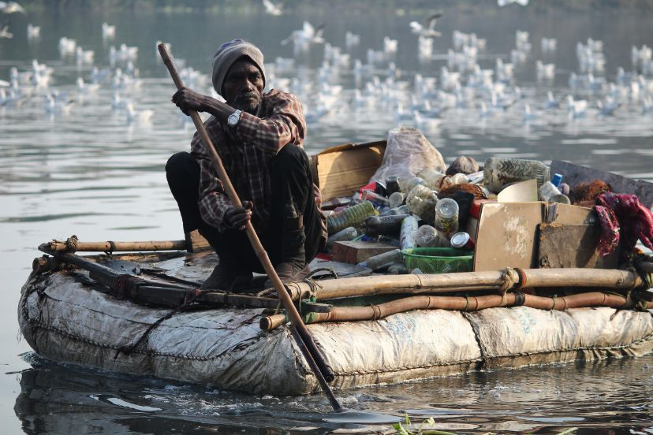

Companies like 4Ocean have been very successful in creating profitable businesses and lifestyle communities from marketing recycled products to consumers. That being said, many companies still have work to do in targeting the root cause of the problems they focus on in a scalable manner.
Over 300M Tonnes of plastic waste are made every year.
But how do we fix this at its root cause?

We Want to Solve Big Problems
But often,
We've looked into areas around consumer advocacy, creating more effective recycling, alternative waste management systems, and informal waste economies in developing countries to name a few.
We wanted to share our findings to inspire others to take action to produce the greatest impact possible in solving this problem.

We owe it to the contributors to our work:
Taylor Leigh Cannizzaro
CAO, Plastic Bank

Markus Flury
Professor, Washington State Univeristy

David Lefebvre
Director of Public Affairs, RecycleBC

Ina Tessnow-von Wysocki
Doctoral Candidate, University of Vienna

Jason Donofrio
External Relations Officer, The Ocean Foundation
Thava Palanisami
Senior Lecturer, University of Newcastle

Charles Rolsky
CSO, Plastic Oceans

Paritosh Deshpande
Associate Professor, Norwegian Science and Technology Univeristy

Oksana Horodytska
Doctoral Candidate, University of Alicante

Huiyi Zhang
Doctoral Candidate, University of the Highlands and Islands
Joana Prata
Doctoral Candidate, University of Aveiro
This is What Surprised Us About the Issue
These are some quick introductions to different topics we've learned about from digging through reports and getting in touch with researchers and entrepreneurs.

Unexpected Ways to Repurpose Plastic
We usually understand recycling up to the point where it gets sorted… but there's an entire world of trouble after that.

Chemical Recycling: It Still Needs Time
To get around barriers with mechanical recycling, we have technologies that turn plastics into chemicals. But are they ready?

What Governments Doing Good Look Like with Recycling
It's hard to imagine effective action on plastic pollution given typical political drama, but is it possible?

We Need to Do More than Just Clean the Ocean
While cleaning the ocean is a popular endeavour, there are more pressing concerns to address.

Waste Management—Less Boring than It Seems
Waste management is literally the difference between oceans growing in plastic and perfectly green economies!

Are alternative plastics worth it?
More companies are switching from plastic, but are plastic alternatives really worth it?

Formal vs. Informal Waste Management
The problems with formal vs. informal waste management look very different.

Low-value vs. High-value Recyclables
Up to 80% of plastics lose quality when melted, making them hard to recycle.
Here are our Thoughts on Current Solutions
We wanted to highlight the good and the bad when it comes to current efforts to address plastic pollution. We hope to inspire more research and action on effective solutions to this problem!

The Ocean Cleanup and Cleanup Efforts
The Ocean Cleanup is one of the most effective out of several organisations working to remove existing plastic waste from the oceans. Their automated technology for this cause enables them to have a scalable solution to marine plastic pollution. Still, their work won't address the problem of plastic waste being generated in the long term.
Plastic Bank and Informal Waste
Plastic Bank is a company working to improve informal waste management in developing countries. They provide impoverished waste collectors with income and increase recycling rates in these countries. Yet, they still continue to face challenges from a lack of infrastructure in developing waste management industries.
Consumer Outreach Organisations
There are many organisations working to solve plastic pollution with consumers by raising awareness, organising volunteering, and supporting advocacy. They've achieved tangible results and have influenced other stakeholders, but they still face challenges in being scalable.
Plastics Research/Awareness Nonprofits
A few nonprofits focused on targeting plastic pollution are taking a new approach to solving the problem - analysing the source of plastics from their production in the first place. Their work on this issue is effective, but very few nonprofits follow this model.
We're a Team of Youth Hoping to Help
Feel free to get in touch with us! We love learning from new people!

Ayleen Farnood
17, excited by brain computer interfaces, virtual reality, and machine learning; developing AI algorithm for self driving cars with Prof. Kundur at UofT.

Madhav Malhotra
17, training to be a developer + entrepreneur + consultant. Hoping to solve climate change. Also goes to school sometimes.
Special thanks to Zara Syed for contributing to our research!